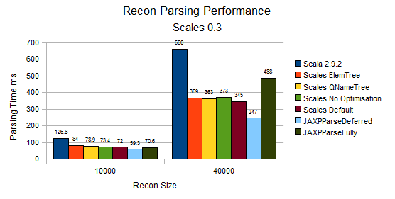

Scales Xml Optimisation¶
Disclaimer¶
Measuring and comparing XML models is fraught with difficulty and will often vary based on individual XML documents and application behaviour.
Introduction¶
A basic premise of Scales Xml is to separate the structure of XML from its contents, allowing optimisation on both axes. Due to the Elem also being the child node container scala.xml can only leverage identical subtrees, not individual elements.
The speed of parsing is also directly related to how much garbage is produced during the parse. For example pre 0.1 versions of Scales used Path directly to build the resulting tree, creating many intermediate Path objects - 99.9% of which were immediately ready for garbage collection. Swapping this into a mutable stack of mutable trees improved parsing performance 20-30%.
Scales takes a flexible approach to memory management allowing the user to tune how much work is performed to reduce allocations during the parse and total resulting memory usage.
Options for memory optimisation¶
Scales Xml's separation of structure and content in particular allows the following areas of memory optimisation:
- QNames
- Attributes
- Elems
- Subtrees
- Structure
During several optimisation rounds it was clear that the largest wins were due to QName and simple Elem (no attributes or namespaces) usage, and as such forms basis for the default parsing behaviour.
QNames often repeat during individual XML documents and, of course, across them in a given domain. QNames can also be shared between Attributes and Elems. There are two direct benefits of optimising at the QName/ level:
- Reduced memory consumption
- Reduced garbage during parsing
However, the time taken to cache QNames is significant for smaller documents (e.g. 150-200 elements) where typically any garbage effects are less likely to impact performance.
The below diagrams illustrate the relative parsing performance of Scales Xml against Scala XML (2.9.1) and the two common Xerces implementations. For all sizes of documents Scales is notably faster than Scala XML, and for larger documents it is considerable faster.

The most important point is that the developer has a choice, when needed, in how to optimise and that Scales allows the developer to easily enhance the default optimisations. The defaults use a thread safe singleton to cache, but developers can also choose to implement a ThreadLocal or a per parse strategy if it better fits. If in doubt profile.
Resulting Sizes¶
The Recon test (See ParsingPerformance - PerfData.reconDoc) approximates a few real world problems tackled by Scales has very few attributes and a flat structure. The 40,000 Recon size is chosen to demonstrate the resulting memory sizes (obtained by the excellent Yourkit profiler):

The default optimisation (which is also 10-20% faster on larger documents than Scala) strikes a very good balance between speed and memory usage. The Scales parsing optimisations also result in QName and Elem cache sizes of 2.24KB and 2.18KB respectively (the Elem caches are used by HighMemory and QNameElemTree Optimisations), showing more than a clear space saving.
The slightly slower to parse (but still faster than Scala XML) Tree based optimisations reduce immediate memory usage by over 15Mb less than Scala XML for the same document, in fact the two Tree optimisations also consume 5Mb less than the Xerces deferred DOM impl.
Full Elem caching alone (not including Elem + Tree) reduces the overall performance by up to 15%, putting it around (and sometimes below) the parsing performance of Scala XML. The potential memory savings are also limited by how often the attribute or namespace values are identical, and it is often better to simply cache attribute values if there is a restricted range available.
See QName and Elem Memory Usage for more details on default memory saving.
Memory Consumption During Parsing¶
The memory consumed by Scales in its default configuration is close to or better than Xerces / JAXP default without the nasty expansion upon using it.

However as can be seen above the memory usage can be substantially reduced, in a similar fashion to Xerces Deferred processing (albeit immutably so).
Overall Parsing Performance¶
The overall parsing performance of Scales Xml, with default Optimisation, is around 20-25% faster than Scala XML for small to mid size documents to 40-45% faster for larger documents.
The larger the amount of data and the level of repeated structure the greater the difference in Scales Xml parsing performance.
Scales is less than 10% slower than JAXP Deferred for smaller documents and for larger documents up to 30% slower. For fully parsed documents however its less than 5% slower for smaller documents and up to 30% faster for larger docs.
Special Case - Pull Parsing via onQNames¶
A key feature of Scales is the XML Pull (via StAX) based parsing that leverages Scalaz Iteratees. A shining example of this being onQNames, the recon file being a driving force behind its design.
In the recon example what is actually interesting is three simple hash maps (Int -> Int), as such the memory usage of a onQNames -> map was examined. Both the overall resulting savings (over a full tree) and the runtime memory requirements to parse are examined using the following code:
object Recon {
import PerfData.ns
val Part = List(ns("Recon"), ns("Parts"), ns("Part"))
val Bom = List(ns("Recon"), ns("BOMs"), ns("BOM"))
val Rec = List(ns("Recon"), ns("Records"), ns("Record"))
val id = ns("id")
val version = ns("version")
}
case class Recon(val parts : Map[Int, Int],
val boms : Map[Int, Int],
val recs : Map[Int, Int])
import Recon._
import Functions._
val xml = pullXml(new java.io.StringReader(s)).it
foldOnDone( xml )( Recon(),
onDone( List(onQNames(Part),
onQNames(Bom),
onQNames(Rec)) )) {
(recon, qNamesMatch) =>
if (qNamesMatch.size == 0)
recon
else {
// we expect only one to match in this pattern
val matched = qNamesMatch.head
val qnames = matched._1 // to get an onDone it must be defined
val x = matched._2.get
// only one child
val pair = (text(x.\*(id)).toInt, text(x.\*(version)).toInt)
qnames match {
case Part => recon.copy( parts = recon.parts + pair )
case Bom => recon.copy( boms = recon.boms + pair )
case Rec => recon.copy( recs = recon.recs + pair )
}
}
}
In short the memory requirements for the maps are 13.7MB, whereas the test itself can run in under 45MB, albeit with a high GC overhead. As such thats roughly 25MB required to actually parse the entire document in such a high level api.
Also worth noting is that it takes 42MB to generate the document
See the [PullParsing.html Pull Parsing], [RepeatedSections.html Pulling Repeated Sections] and the PullTests themselves for examples on how this approach can be best leveraged in your code.
Created: December 22, 2023 18:03:16